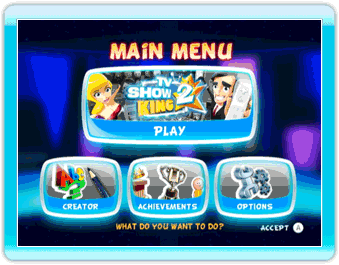
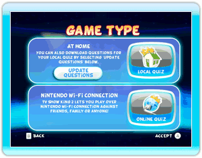
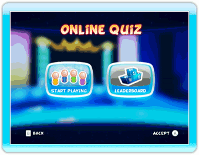
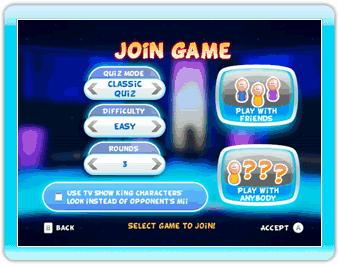
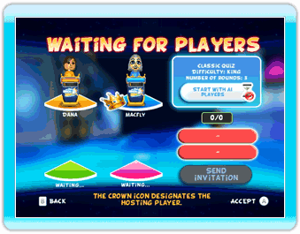

21 |
Nintendo Wi-Fi Connection |
 |
Bij TV Show King 2 mag je het online opnemen tegen vrienden, familie of iedereen!
Zodra je Nintendo Wi-Fi Connection is geïnstalleerd, is het spelen van een online quiz simpel.  Selecteer ‘Play’ (Spelen) in ‘Main Menu’ (Hoofdmenu).  Selecteer ‘Online Quiz’ in het ‘Game Type’ (Speltype)-menu.  In het ‘Online Quiz’-menu kun je de online ranglijst bekijken of een spel starten. Kies ‘Start Playing’ (Start spel) als je online wilt spelen.  Nadat je een Mii-personage en een quizdesk hebt gekozen, moet je het speltype kiezen. Zet naar wens de opties ‘Quiz Mode’ (Quiz), ‘Difficulty’ (Moeilijkheid) en ‘Rounds’ (Ronden) aan/uit en selecteer vervolgens ‘Play with anybody’ (Met iedereen spelen). In dit menu kun je ook je ‘Friend Roster’ (Vriendenoverzicht) bijhouden. Dit doe je met ‘Play with Friends’ (Met vrienden spelen). Lees voor meer informatie over het Vriendenoverzicht en opties de onderstaande beschrijving.  Nadat je ‘Play with anybody’ (Met iedereen spelen) of ‘Inviting your Friends’ (Vrienden uitnodigen) hebt geselecteerd (zie ‘Online Vrienden’ hieronder), verschijnt het ‘waiting screen’ (wachtscherm). Je hoeft niets te doen, alleen te wachten totdat alle vereiste vlakken zijn gevuld. Als je wilt kun je beginnen met AI-spelers (computertegenstanders). Als je de door jou gekozen opties wilt wijzigen, druk dan op de B-knop om terug te keren naar het vorige scherm. Zodra er minimaal 2 spelers (inclusief jijzelf) meespelen, kun je het spel starten voordat alle vlakken zijn gevuld. Dit heeft slechts tot gevolg dat alle ontbrekende spelers, AI-spelers zullen zijn. Het spel begint alleen met AI-spelers als alle verbonden spelers het pictogram ‘Start with AI players’ (Start met AI-spelers) hebben geselecteerd. De Mii-personages die het pictogram hebben geselecteerd zijn gemarkeerd.
Als je de spelinstellingen kiest voor een online quiz, kun je ook ‘Play with Friends’ (Met vrienden spelen) selecteren en een Vriendencode invoeren of je Vriendenoverzicht beheren. In dit scherm kun je: A) ENTER A NEW FRIEND CODE (NIEUWE VRIENDENCODE INVOEREN) Gebruik het numerieke toetsenbord op het scherm om de 12-cijferige Vriendencode in te voeren. Jullie zijn Vrienden zodra je vriend(in) zijn/haar Vriendencode heeft ingevoerd op zijn/haar B) SEE YOUR OWN FRIEND CODE (VRIENDENCODE BEKIJKEN) Hier kun je je eigen Vriendencode bekijken. Als je Vrienden wilt zijn met iemand die je kent, moet je hem/haar deze code geven. C) INTERACT WITH FRIENDS (INTERACTIE MET VRIENDEN) Rechts in het scherm zie je een lijst met al je Vrienden. Dit is je ‘Friend Roster’ (Vriendenoverzicht). De huidige status van je Vrienden (offline, online, niet beschikbaar, wacht op willekeurige speler, wacht op Vrienden, uitgenodigd) kan worden vastgesteld aan de hand van de kleur van hun tags. Ongeacht de status van je Vriend(in) kun je het pictogram met zijn/haar naam selecteren en hem/haar verwijderen uit je Vriendenoverzicht. Als de status van je Vriend(in) weergeeft dat hij/zij wacht op een spelwedstrijd (met een willekeurige speler of Vrienden), dan kun je het pictogram selecteren met zijn/haar naam om mee te spelen. Als je hiervoor kiest, dan kun je je spelinstellingen niet selecteren en word je verbonden met je Vriend(in). Tot slot: zodra je Vriend(in) online is, kun je het pictogram selecteren met zijn/haar naam om hem/haar uit te nodigen om mee te spelen. Let op: je moet eerst alle Vrienden selecteren die je wilt uitnodigen en dan pas het ‘Send invitation’ (Uitnodiging verzenden)-pictogram aanvinken. Vervolgens kom je automatisch in het Wachtscherm. |
 |
 |
 |